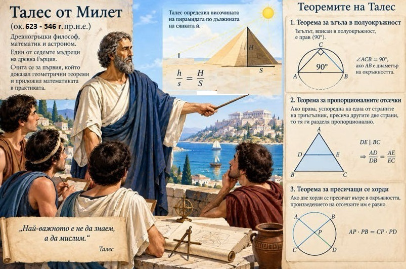
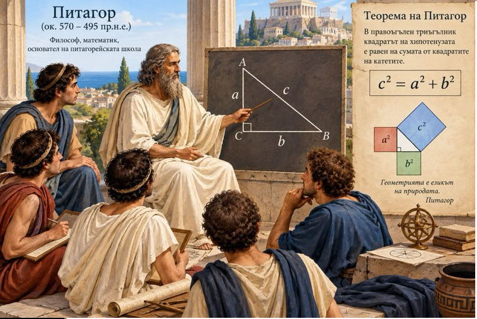
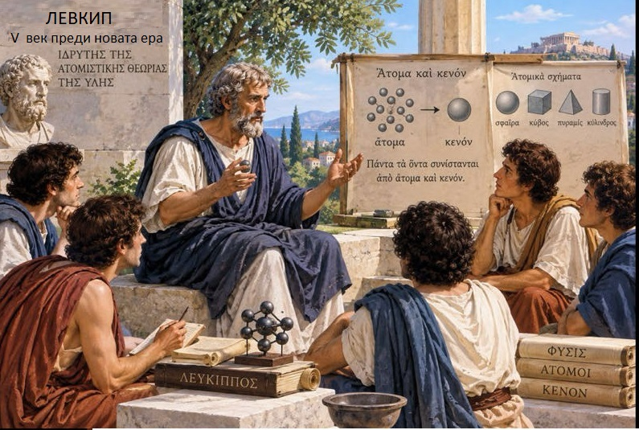
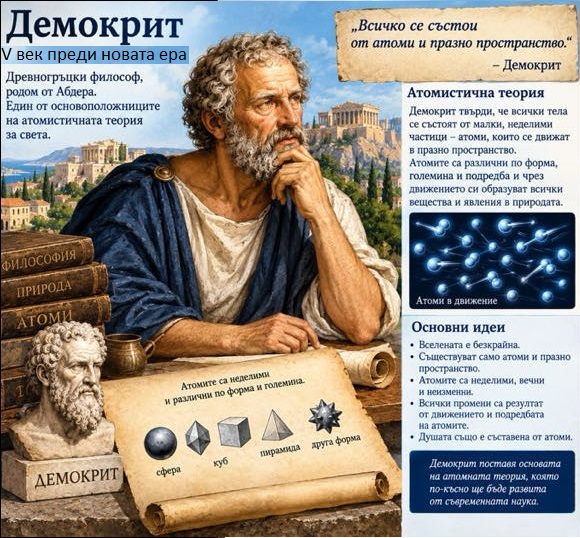
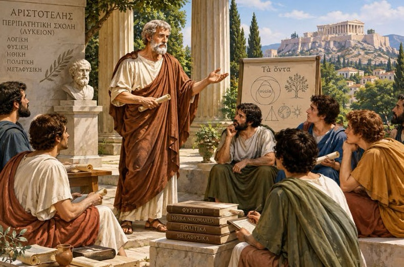
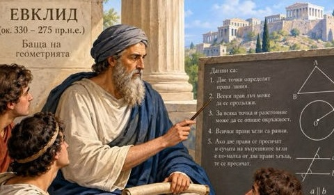
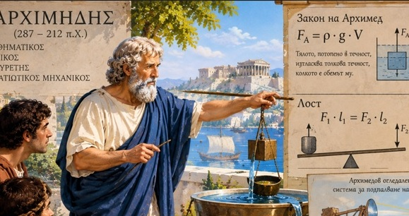
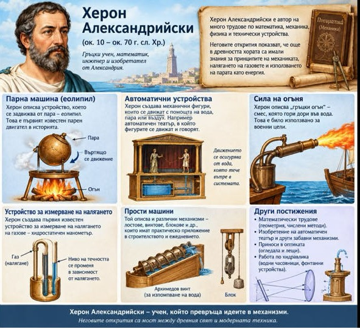

Учени от древността
Талес Милетски – мъдрецът, който открил тайната на водата

.
• Начало и пътувания:
Талес получава добро образование, започва като обикновен търговец и пътува дълго из Египет (Тива и Мемфис)
• Научни постижения и измервания:
• Измерва египетските пирамиди, по дължината на тяхната сянка. • Прогнозира слънчево затъмнение в Милет чрез сложна геометрия и тригонометрия. • Обяснява, че Луната свети с отразена светлина, а затъмненията стават, когато тя закрие Слънцето. • Въвежда съзвездието Малка мечка като ориентир за пътуващите.• Философия и природни явления:
• Смята водата за първоначална субстанция на света. • Обяснява земетресенията с плаването на Земята върху вода, а не със свръхестествени сили. • Нарича пространството „най-великото нещо, защото съдържа всички неща“.• Новаторство:
Създава математически метод за изучаване на небесните тела и съчетава практическата с теоретичната геометрия.
.
.
Питагор– математикът, открил тайната на правоъгълния триъгълник

Роден е около 570 г. пр.н.е. на остров Самос. Баща му Мнесарх бил финикийски търговец със собствени кораби, а майка му
Питаис била известна като най-красивата жена на острова. Семейството било заможно и могло да осигури на сина си добро образование.
Младият Питагор бил и отличен спортист и според преданието участвал в Олимпийските игри още на 17 години.
На 18 години напуснал Самос и заминал за Египет. Там изучавал геометрия и астрономия,
бил посветен в местните тайни учения и усвоил много от постиженията на източните култури.
Върху възгледите му повлияли и философите Талес и Анаксимандър. Всичко това по-късно пренесъл в гръцката наука, философия и религия.
Около 530 г. пр.н.е., когато бил на около 40, избягал от самоския тиранин Поликрат и се установил в Кротоне, в Южна Италия.
Там около него се събрали ученици, които образували братство на посветените и почитали учителя си почти като бог.
Така през 532 г. пр.н.е. възникнала питагорейската школа, известна със строгата си дисциплина.
Питагорейците търсели числовите отношения във всичко около себе си.
Учението им за количествените закономерности в света дало тласък на математиката, физиката, астрономията и географията.
Смята се, че именно Питагор пръв предположил, че Земята е кълбо, и разбрал, че Зорницата и Вечерницата са една и съща планета: Венера.
.
.
Левкип– философът, който открива атома

В Древна Гърция живял философът Левкип, който се опитвал да разгадае тайните на света.
Той предположил, че всички тела са изградени от изключително малки и неделими частици, наречени атоми.
Според Левкип атомите се движат непрестанно в празното пространство. Те се съединяват по различни начини и така създават многообразието на света около нас.
Макар по негово време идеите му да не можели да бъдат доказани с научни опити, те поставили началото на атомистичните представи за строежа на материята.
Така Левкип останал в историята като един от първите мислители, потърсили обяснение за света чрез атомите.
.
.
Демокрит – философът на атомите

Демокрит бил древногръцки философ, ученик и последовател на Левкип. Той развил и систематизирал учението за атомите, според което всички тела са изградени от малки,
неделими частици, наречени атоми, които се движат в празното пространство.
Демокрит бил любознателен човек и пътувал до много страни, сред които Египет, Индия и Етиопия. Навсякъде се срещал с учени и обогатявал знанията си.
Интересувал се от физика, математика, астрономия, музика и философия.
Написал множество съчинения, но до нас са достигнали само отделни откъси от тях.
Идеите на Демокрит изпреварили времето си. Макар представите му за атомите да се
различават от съвременните научни знания, неговото учение поставило важни въпроси за строежа на материята и
повлияло върху развитието на науката. Затова той остава в историята като един от мислителите, положили основите на атомната теория.
.
.
Аристотел – велик древногръцки учен и философ

Аристотел е един от най-великите учени и философи на Древна Гърция.
Той е роден през 384 г. пр. Хр. и още от млад проявява голям интерес към природата и човешкото познание.
Учи при прочутия философ Платон, а по-късно сам става учител на Александър Македонски, бъдещия Александър Велики.
Аристотел изучава много области на знанието – физика, астрономия, биология, география и медицина.
Той наблюдава растенията и животните, опитва се да обясни природните явления и разсъждава върху устройството на света.
През живота си създава множество трудове, които оказват огромно влияние върху развитието на науката и философията.
Заради широките си интереси и стремежа си към знания Аристотел е смятан за един от най-значимите мислители на Античността.
Неговите идеи се изучават и обсъждат векове наред, а приносът му към развитието на човешкото познание остава изключително важен.
.
.
Евклид – бащата на геометрията

Евклид е древногръцки математик, живял около III век пр.н.е. в египетския град Александрия по времето на цар Птолемей I.
Той е известен като бащата на геометрията заради огромния си принос към развитието на математиката.
Най-известният му труд се нарича „Елементи“.
В него Евклид систематизира знанията за геометричните фигури, точките, правите и равнините.
Чрез логически разсъждения и доказателства той изгражда основите на геометрията, която днес наричаме евклидова.
Книгата се използва като учебник в продължение на повече от две хиляди години.
Евклид изследва също числата, перспективата, оптиката и отражението на светлината в огледалата.
Макар да знаем малко за живота му, неговите трудове оказват огромно влияние върху развитието на науката.
.
.
Архимед – великият учен на Античността

Архимед е древногръцки математик, физик, астроном и инженер, живял през III век пр. Хр.
Той е роден в град Сиракуза и се смята за един от най-великите учени на Античността.
Архимед прави важни открития в математиката и физиката. Той изследва свойствата на лоста и формулира принципи, свързани с поведението на телата във водата.
На негово име е наречен архимедовият винт – устройство, което служи за повдигане на вода.
Ученият изчислява с голяма точност и приблизителната стойност на числото π (пи).
Според известна легенда Архимед открил начин да определи дали златната корона на цар Хиерон е изработена от чисто злато.
Когато разбрал как да реши задачата, той възкликнал „Еврика!“, което означава „Открих!“.
Оръжие, което е използвано при защитата на Сиракуза от вражески кораби е архимедовата лапа.
То представлява съоръжение, на която е окачена голяма метална кука.
При пускане на лапата върху вражески кораб, стрелата се издига и издига кораба над водата, като при падането си обратно той претърпява повреди и е възможно да потъне.
Архимед може би е използвал група от огледала, действащи заедно като параболично огледало (архимедов лъч), за да подпалва кораби, нападащи Сиракуза rfrg
Архимед загива по време на римската обсада на Сиракуза през 212 г. пр. Хр. Неговите открития оказват огромно влияние върху развитието на науката и техниката и до днес.
.
.
Херон – изобретателят, превърнал науката в чудо
бил древногръцкият Тони Старк – гениален изобретател, който изпреварил времето си с хилядолетие.
Той живял в Александрия и обожавал механиката, пневматиката и театъра.
Херон създал първата в света парна машина, наречена еолипил – куха сфера с две чучурчета, която се въртяла бесни, когато водата вътре заври.
За съжаление, в античността я сметнали просто за забавна играчка, а не за източник на енергия.
Той използвал изобретенията си за „магия“ в храмовете: създал автоматични врати, които се отваряли сами, когато пред храма се запали огън,
и автомати за светена вода, които работели с монети – първите вендинг машини в историята.